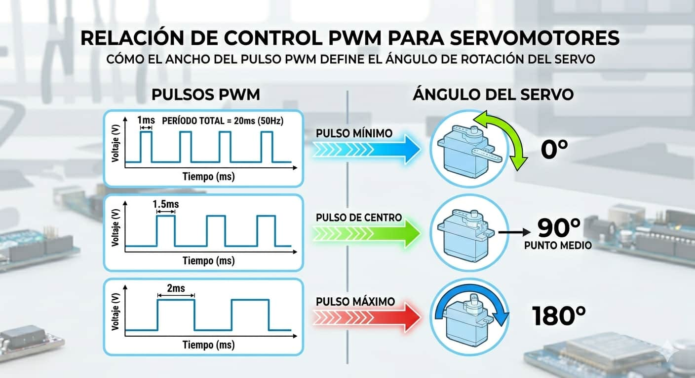
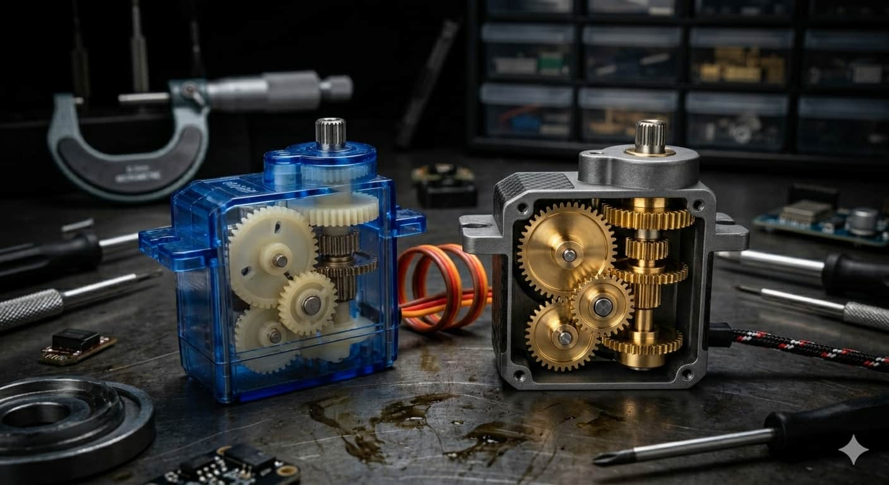
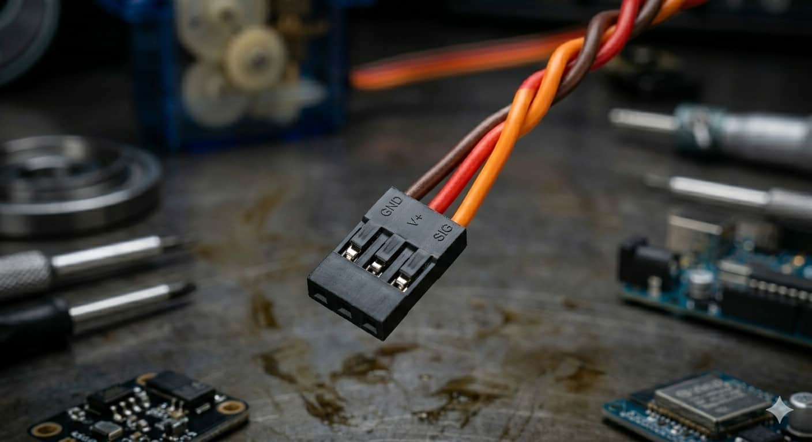
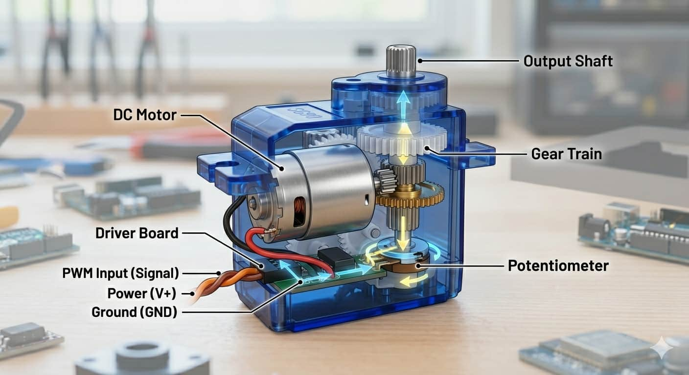
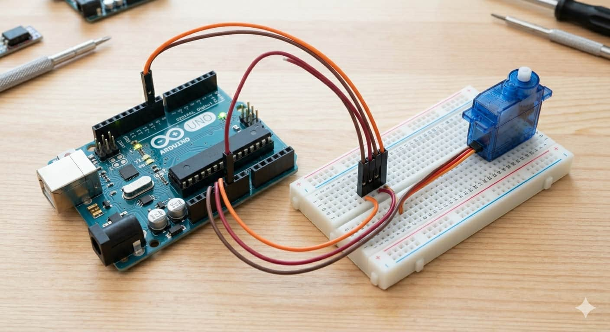

Control por PWM

Se gobiernan mediante pulsos eléctricos modificados que le indican con total exactitud a qué posición angular debe trasladarse el eje.

Un servomotor es un motor "inteligente". A diferencia de los motores convencionales que giran sin parar, el servo puede posicionarse en un ángulo específico y mantenerse ahí con mucha firmeza, actuando como las articulaciones de tu robot.

Se gobiernan mediante pulsos eléctricos modificados que le indican con total exactitud a qué posición angular debe trasladarse el eje.

Pueden ser de plástico (económicos y ligeros) o metálicos (resistentes a altas cargas de fuerza y torque).

Cuentan con un conector de 3 hilos: Marrón/Negro para GND, Rojo para VCC 5V y Naranja/Amarillo para la Señal.

Dentro de su carcasa se oculta un motor DC pequeño, un tren de engranajes reductores y un potenciómetro acoplado al eje. El circuito interno compara la señal del Arduino con la posición real medida por el potenciómetro y corrige el giro de forma inmediata. Analogía: Es como un brazo humano; tú decides el ángulo exacto para doblar el codo y lo mantienes firme.
Al incluir su propio controlador interno, los modelos pequeños como el micro servo SG90 se pueden conectar directamente a la placa sin etapas de potencia externas.

El conexionado se realiza de forma directa mapeando la alimentación y la línea de datos:
Este programa hace uso de la librería nativa para mover el eje de forma cíclica entre 0°, 90° y 180° grados:
#include <Servo.h>
Servo miServo;
void setup() { miServo.attach(9); }
void loop() {
miServo.write(0); delay(1000);
miServo.write(90); delay(1000);
miServo.write(180); delay(1000);
}
Aprende a importar la librería oficial, calibrar los límites del eje y manipular la posición de tus mecanismos: